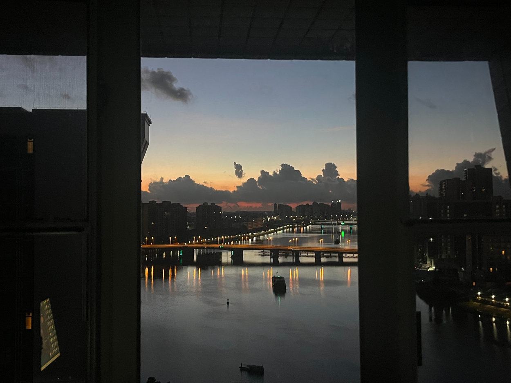
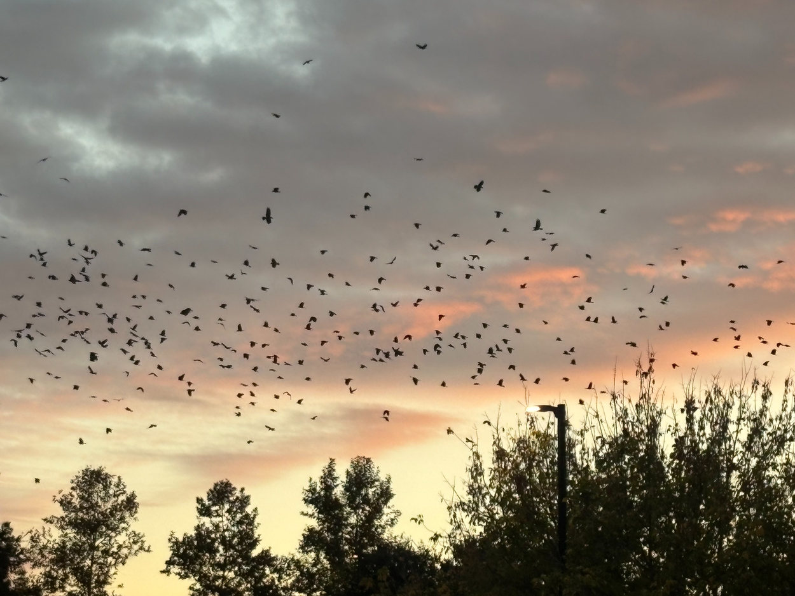

DES 157A / EVERY PICTURE
Between Moments



01 / 06
BEHIND THE FRAME
Pink Hour by the Tracks
01 / THE ROAD
The road was busy, but the sky felt unusually calm.
The soft pink light made this everyday scene look different.
I wanted to remember this small moment before it disappeared.